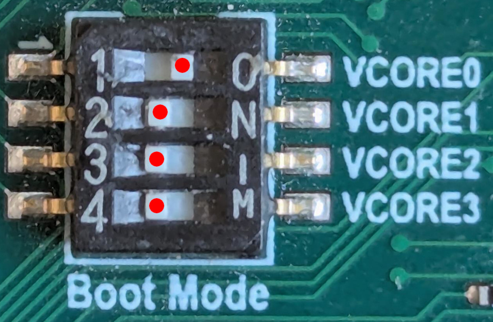
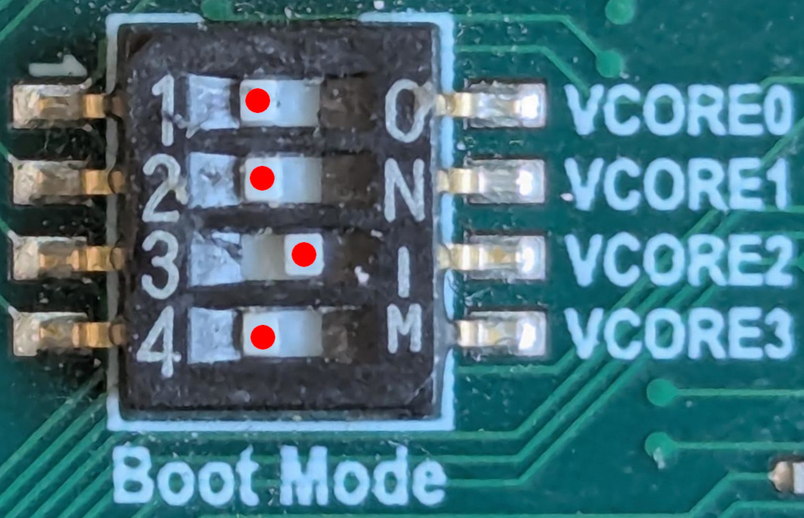

LAN969x Flashing and Debrick Instruction
If VelocityDRIVE-SP is not capable of booting on a given board, then it may be necessary to follow the "de-brick" procedure where the NOR flash is erased and programmed with a new image. This can be done in a few different ways; this page will describe the simplest method.
Before starting, make sure all of the following prerequisites are met:
-
Physical access to the board
-
A USB-UART connection to a PC
-
A browser with serial port support (Edge or Chrome)
-
A firmware image file to be installed (see SW Binary Packets for download instructions)
-
Access to the DIP switches
1. Debrick using fwu.html
The LAN969x SoC contains a ROM monitor which can be used to download a new image over UART, and then write it to the NOR flash. The advantage of this method is that it is simple to follow and does not require any special tools.
This method is described in the following sections.
1.1. Prepare the Board
Toggle the Boot-Mode DIP switch into position 1011 (0xb) to select the
high-speed monitor mode. The position of the DIP switch is shown here (the red
dots are added to the picture to make it easier to see):

Once the DIP setting is done, reset or power on the board.
1.2. Open FWU.html
To communicate with the board, the fwu-lan969x_a0-release.html tool is used.
-
Follow the link to save the file to your PC.
-
Make sure to open the downloaded HTML file in either Chrome or Edge
-
These are the only browsers with UART support built-in.
-
If using Linux, make sure the user running Chrome has access to the UART.
-
| This only works if no other application/process is using the UART. Therefore, make sure to close any terminal emulators and/or VelocityDRIVE-CT which may open the UART. |
You should now see a web page like the one below:
-
Start by selecting the baud rate, and set this to 921600 baud per second.
-
Then select "Connect device"
When selecting "Connect device" you should see a pop-up asking which UART device to use. This should look like the image below:
Select the one with "MCP2200" in its name, and hit connect.
At this point, the fwu tool is initialized and is ready for usage.
1.3. Download and BL2u
The BL2u image is a second-stage image including the code needed to program the NOR flash. This image is embedded in the HTML page; you just need to hit the "Download BL2u" button as shown below:
1.4. Programming the Flash Image
Once the BL2u image in the previous step is fully downloaded and loaded, the UI will change a bit and should look like the screenshot below:
| These steps will erase and program the NOR flash entirely; all firmware and configuration on the board will be lost. |
Here are the required steps:
-
Click the "Incremental" tab
-
Choose "NOR Flash"
-
Choose the file to be programmed.
-
This must be a 2MB
imgfile.
-
-
Click "Incremental Write Image".
-
A progress bar will be shown, it will go to 100% a few times. This is because it is the incremental mode where the image is being uploaded in chunks and written.
-
| Once it has completed, make sure to close the HTML browser/tab as this is the only way to disconnect the UART. |
1.5. Booting Newly Programmed Image
Finally, change the boot-mode DIP switch back to: 0100 (0x4) or 0001 (0x1)
to boot from the newly programmed NOR flash. Settings shown here:
| Strap Value | DIP-Setting | LAN969x (A0) |
|---|---|---|
0001 (0x1) |

|
Default development boot mode for VelocityDRIVE-SP |
0100 (0x4) |

|
Default boot mode for VelocityDRIVE-SP |